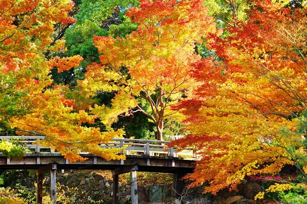
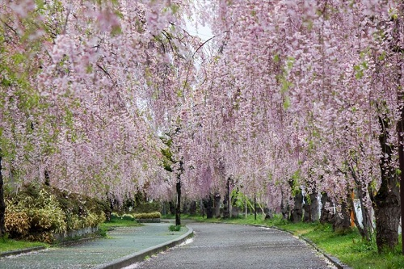
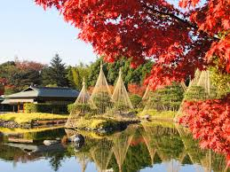

-

Tokugawaen Garden
Tokugawaen Garden is a Japanese garden located in Nagoya. The property belonged to a family within the Tokugawa clan that ruled Japan during the early modern period (1600-1867). The family donated the property to Nagoya city in the 1930s. Unfortunately, the garden was destroyed during World War Two. It was reconstructed through funds raised from the public and stands today as a prime example of Japanese garden design and architecture that was popular with samurai families. Next to the garden is the Tokugawa Museum that houses some of the family's treasures.
Recommended Season March･April･May･June･July･August･September･October･November
-

Tokokusan Fruit Park
In Japan, it is said that if you like fruits, you should go to Tokokusan Fruit Park at least once in your life. About 190 different fruits are cultivated here, including Japanese apples, pears, peaches, and grapes. You can buy and taste the fruits right here at the farm. Also, in early April more than 1000 cherry trees bloom here, making the park a top choice for cherry blossom viewing in Aichi Prefecture.
Recommended Season March･April･May
-

Shirotori Teien Garden
Shirotori Teien Garden is a Japanese garden in Nagoya, Japan. It is distinct for being built around streams and ponds. The garden represents major geographical sites in Japan in miniature size, such as a mound that represents Mt. Ontake. The garden features a traditional Japanese tea house called Seiu-tei. It is possible to book rooms within the building for private Japanese tea ceremonies. The harmony between the buildings and the landscape and the motif of water that runs through the whole site's design makes Shirotori Teien a must visit for any fans of gardens and traditional Japanese architecture who are stopping by Nagoya.
Recommended Season March･April･May･September･October･November
-

Japan’s Number One Stone Steps
The Nagoya City Art Museum is one of the major art museums in Aichi Prefecture. Its collection includes works by Ecole de Paris artists, Mexican Renaissance art, local art from Nagoya and international and Japanese contemporary art. Famous artists include Frida Kahlo, Chagall, Tamiji Kitagawa and Kiefer. The museum is a great place for learning how Japanese artists from Nagoya were connected to other international artists and influenced by global trends in the 20th century. Also check the official website for other exhibitions and lectures if you are planning to visit.
Recommended Season January･February･March･April･May･June･July･August･September･October･November･December